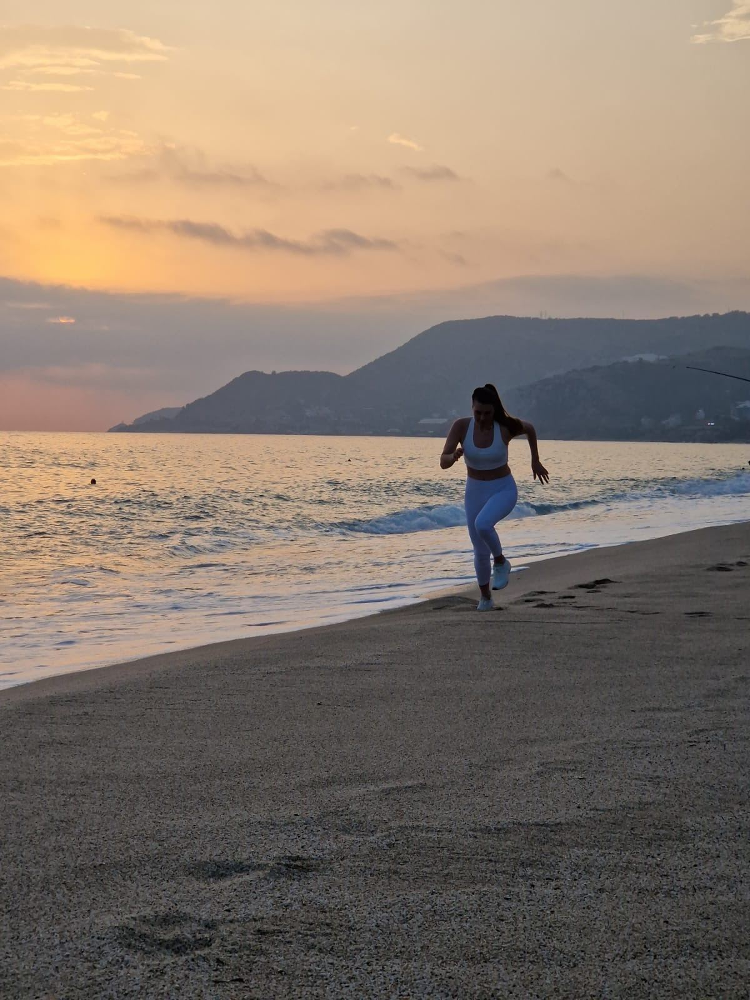

Tre vägar till samma mål
Rörelse, nervsystem och återhämtning — som ett integrerat synsätt.

Styrketräning
Återställ rörelse. Bygg styrka.
Vetenskapligt grundad styrketräning baserad på modern biomekanik som förbättrar andning, kroppshållning och rörlighet samtidigt som du bygger styrka.
Utforska styrketräning →
Neuroträning
Träna systemen bakom varje rörelse.
Vetenskapligt grundade övningar för syn, balans och kroppsmedvetenhet som minskar muskelspänningar och förbättrar prestationen.
Utforska neuroträning →
Behandlingar
Återställ balans. Hitta lugn.
Energibehandlingar genom Reiki och ljudterapi som stödjer nervsystemets reglering, djup avslappning och ett övergripande välmående.
Utforska behandlingar →Ibland har kroppen återfått sin fysiska förmåga att röra sig, men nervsystemet kan ändå reagera med skydd baserat på tidigare erfarenheter.
Gymnovite-filosofin
Vi ser inte styrka, rörelse och läkning som separata delar.
Vi ser dem som olika sätt att hjälpa kroppen få den information den behöver för att känna sig trygg nog att förändras. Läs mer om filosofin och grundaren Christina Lövald Hellberg.

Läkning sker när kroppen får den information den behöver för att känna sig trygg nog att förändras.